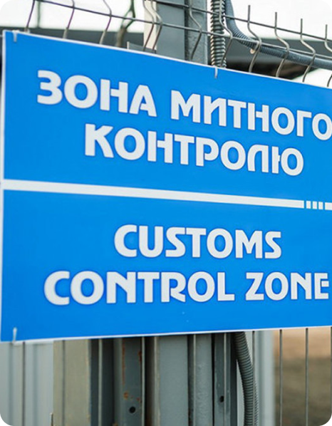

International partners and organizations, if you have decided to provide humanitarian aid to ensure the national security, defense and civil protection of Ukraine due to Russia's invasion, we would like to inform you:
Starting from March 1, 2022, in accordance to the Martial Law, in order to implement all measures to ensure national security and defense, the HUMANITARIAN SUPPORT is moved through the customs borders of Ukraine in the place of crossing the customs border on the basis of the accompanying documents or the declaration filled in by the person, transporting the goods, using this form.
WITHOUT requiring recognition of goods as humanitarian aid;
WITHOUT requiring the inclusion of applicants in the Unified Register of recipients of humanitarian aid.

Attention!
Humanitarian aid is allowed through without applying non-tariff regulation of foreign economic activity.
The State Customs Services and the State Border Guard Services have been instructed to ensure the urgent passage of humanitarian aid across the state border during the Martial Law.